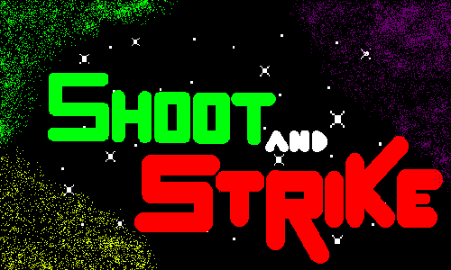

Shoot and Strike é um Shooter Shoot 'em up 2D totalmente desenvolvido com C/C++ e o FrameWork para jogos SFMl. Divirta-se voando rápido e atirando em asteróides em duas dimensões em uma aventura espacial.
Para mais informações, consulte os links abaixo...